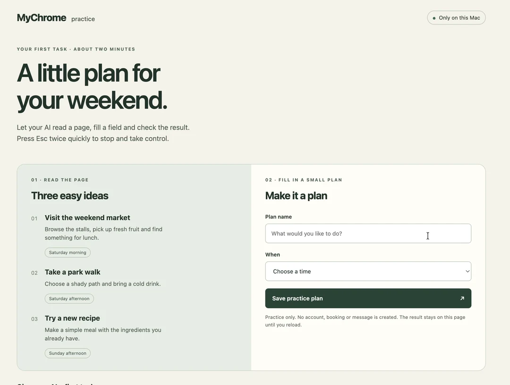

读懂当前页面
让助手读取已打开的页面，找出你需要的信息。
“看看这个页面，帮我找出下一步要填什么。”
你的 Chrome · 你的 AI · 你的控制权
保留已经登录的页面和工作上下文。MyChrome 让 AI 助手用真实鼠标和键盘，在你熟悉的 Chrome 里把事情做完。
Apple Silicon · macOS 13+ · Google Chrome
源码安装 · 需要
Node.js 与 Xcode Command Line Tools

同一个浏览器。少一点来回折腾。
无需扩展 · 无需调试端口 · 本机 MCP从一件小事开始
让助手读取已打开的页面，找出你需要的信息。
“看看这个页面，帮我找出下一步要填什么。”
输入内容、选择选项，并在完成后检查页面结果。
“把这些资料填进表格，保存后核对内容。”
将合适的连续操作保存为网站流程，下次填写新参数后运行。
“把这段固定步骤留下，下次继续用。”
这些是任务示例。实际能力取决于网站、权限和页面状态。
随时接回来
MyChrome 使用 Mac 的真实鼠标和键盘。接管期间普通输入会被拦截；需要接手时，快速连按两次 Esc。
第一步，亲眼看见
内置离线练习，让你先熟悉操作，再用到自己的工作。

真实本地操作 · 2 倍速 · 删去等待间隔 · 裁掉浏览器工具栏。使用虚构练习内容。
和你的助手一起用
Codex 和 Claude Code 都能使用浏览器工具。原生会话功能因客户端而异。 入门引导支持中英文切换；主工作区目前使用中文界面。
| 功能 | Codex | Claude Code | 其他 stdio MCP 客户端 |
|---|---|---|---|
| 读取与操作 Chrome | 支持 | 支持 | 需要本机 stdio 支持 |
| 原生窗口实时文字与回复 | 需要支持的集成与已关联会话 | 暂不支持 | 未提供适配器 |
MyChrome 在 Chrome 所在的 Mac 上运行。模型及账号由 AI 客户端提供，其费用或订阅可能另计。
准备好开始了吗
Apple Silicon · macOS 13+ · Google Chrome。推荐 Node.js 24+，也支持 20.19+、22.13+；需要 Git 和 Xcode Command Line Tools。
完整安装与权限指南 ↗git clone https://github.com/shuaige121/mychrome-mcp.git
cd mychrome-mcp
bash scripts/setup.sh从源码安装 · MIT 开源 · 当前未发布到 npm